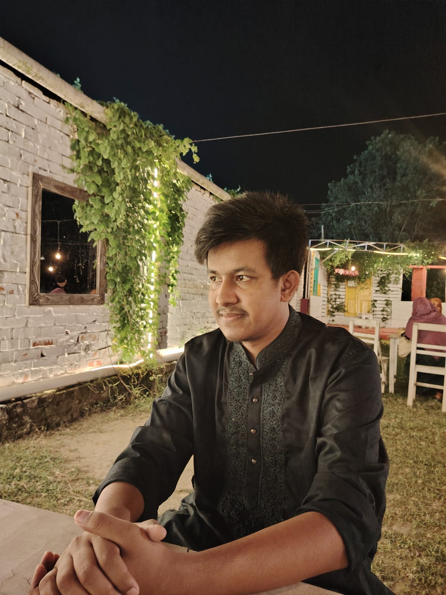

CTO — Chakri.ai
Leading engineering and product strategy for an AI-powered career platform.
Hello.
Open Source Contributor AI & Machine Learning CTO Builder
RUET CSE 21 — Final Year
I build developer tools, lead engineering teams, and ship open-source software used by thousands — from Bangla OCR libraries to multi-language VS Code extensions.

Leading engineering and product strategy for an AI-powered career platform.
Driving technical vision and engineering at luminexlabs.io.
Built Monojog.app — a focus and concentration app for deep work.
Open-source tools and products published to PyPI, the VS Code Marketplace, and the web.
A focus and concentration app designed to help you enter deep work. Built end-to-end — product, design, and engineering.
Visit siteBangla optical character recognition library — extract text from Bengali documents and images with a clean Python API.
Run code in 11+ programming languages directly inside VS Code. Streamlines the compile-run-debug loop for developers.
Unified medical workflow SDK wrapping pydicom, nibabel, SimpleITK, and FHIR behind a clean developer-friendly API.
Leading engineering and technical strategy for an AI-powered career platform.
Designed and built Monojog.app, a focus and concentration application.
Contributed to engineering initiatives and gained hands-on industry experience.
I'm Umor Faruks Supto (উমর ফারুক সুপ্তো) — a final-year Computer Science & Engineering student at Rajshahi University of Engineering and Technology — RUET CSE 21 — Final Year. Based in Rajshahi, Bangladesh, I build software as a Bengali developer with a global open-source footprint.
Also findable as Umor Faruk Supto, Omor Faruk Supto, or Omar Faruk Supto — Supto online as umorfaruksupto and suptoo.
As CTO at Chakri.ai and Luminex Labs, I lead engineering teams and shape technical strategy. As a builder, I ship open-source tools — from Bangla OCR libraries to VS Code extensions — used by thousands of developers worldwide.
I care deeply about API design, documentation quality, and shipping software people can rely on. When I'm not in lectures, you'll find me iterating on products and exploring how thoughtful engineering makes complex workflows feel effortless.
Open to collaborations, internships, and conversations about developer tools, open source, and software engineering.